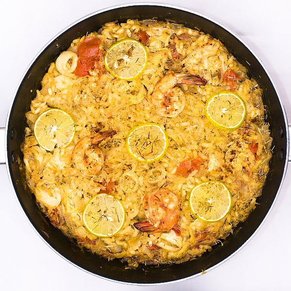

Paella

Classic Spanish Paella
Ingredients:
- 1 cup Arborio rice or Spanish paella rice
- 2 cups chicken broth (or fish stock)
- 1/2 cup white wine
- 1/4 cup extra-virgin olive oil
- 1 onion, finely chopped
- 3 garlic cloves, minced
- 1 red bell pepper, sliced
- 1/2 cup green peas
- 1/2 cup diced tomatoes (canned or fresh)
- 1/2 teaspoon saffron threads (or turmeric for color)
- 1/2 teaspoon smoked paprika
- 1/2 teaspoon red pepper flakes (optional)
- 200g chicken thighs, boneless and cut into bite-sized pieces
- 200g shrimp, peeled and deveined
- 200g mussels or clams, cleaned
- 1/4 cup fresh parsley, chopped
- 1 lemon, cut into wedges
- Salt and pepper, to taste
Steps:
- In a paella pan or large skillet, heat olive oil over medium heat. Add chicken pieces, season with salt and pepper, and brown them evenly. Remove and set aside.
- In the same pan, sauté onions and bell peppers until softened. Add garlic and cook for another minute.
- Stir in rice, ensuring it's well-coated with the oil and vegetables. Cook for 2 minutes.
- Pour in white wine, letting it simmer and reduce by half.
- Add diced tomatoes, saffron (or turmeric), smoked paprika, and red pepper flakes. Mix well.
- Pour in chicken broth and return the browned chicken to the pan. Let it simmer for about 10 minutes.
- Add shrimp and mussels/clams, pushing them slightly into the rice mixture.
- Continue cooking without stirring (to achieve the desired crust at the bottom) for another 10-15 minutes, or until rice is cooked and has absorbed the liquid. Add green peas in the last 5 minutes.
- Check the seasoning and adjust with salt and pepper if needed.
- Garnish with fresh parsley and serve with lemon wedges.